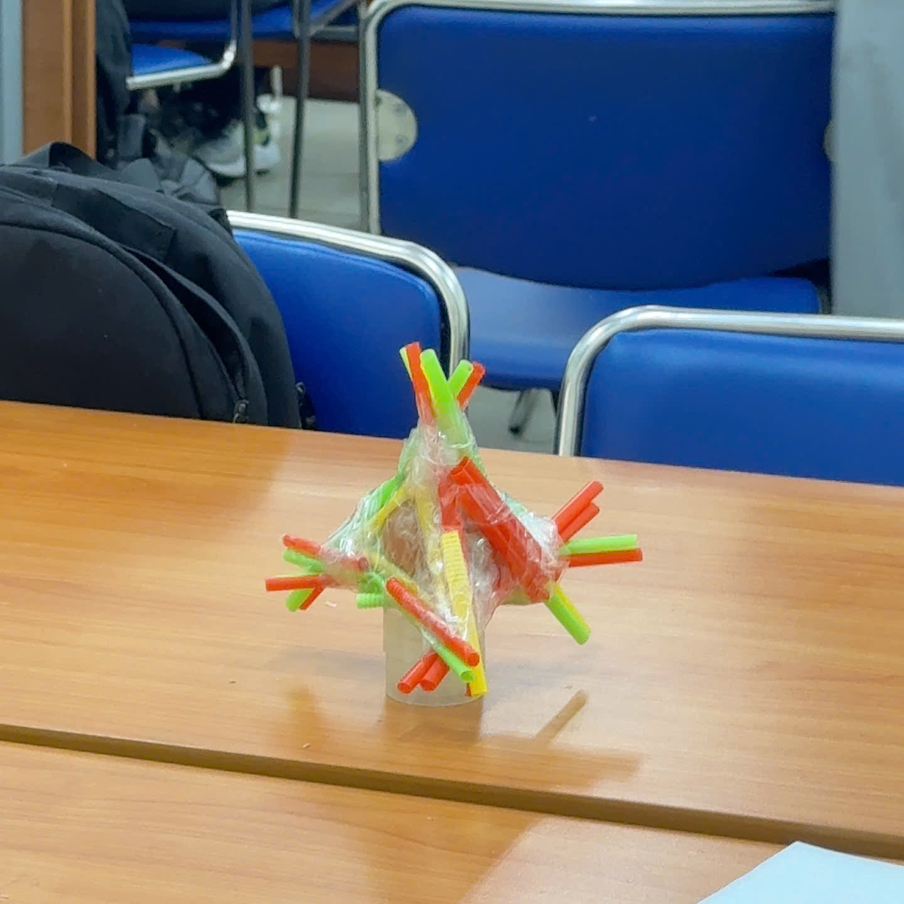

KHÁM PHÁ HÀNH TRÌNH
Bộ phim là hành trình khám phá bản thân đầy cảm xúc của nhóm bạn trẻ, đối diện với những áp lực và kỳ vọng để tìm ra ý nghĩa thực sự của việc "Sống Lớn Hơn Chính Mình".
Phim không chỉ là một câu chuyện mà còn là một lời mời gọi bạn nhìn lại những định kiến và giới hạn cá nhân. Nó đặt ra câu hỏi: Liệu bạn đã thực sự sống với tất cả tiềm năng của mình chưa?
VỀ PHIM
Tóm Tắt Cốt Truyện (Gợi Mở)
Câu chuyện xoay quanh An, một sinh viên kiến trúc luôn cảm thấy mình nhỏ bé giữa thành phố lớn và gánh nặng của gia đình. Khi một dự án cộng đồng quan trọng đứng trước nguy cơ bị hủy bỏ, An và những người bạn phải hợp lực, không chỉ để cứu lấy dự án mơ ước mà còn để vượt qua giới hạn của chính họ, khám phá sức mạnh tập thể và giá trị của sự đồng cảm. Đây là một cuộc chiến không khoan nhượng giữa lý tưởng tuổi trẻ và thực tế khắc nghiệt.
Thông Điệp: "Being Bigger Than Yourself"
"Sống Lớn Hơn Chính Mình" không có nghĩa là trở nên vĩ đại hay nổi tiếng. Thông điệp cốt lõi là khả năng kết nối, thấu hiểu và tạo ra giá trị tích cực cho cộng đồng xung quanh. Bộ phim khẳng định rằng, mỗi hành động nhỏ, mỗi sự quan tâm chân thành đều có thể tạo nên sự khác biệt lớn, giúp chúng ta nhìn thấy bức tranh rộng hơn ngoài những lợi ích cá nhân.
🎬 Quá Trình Thực Hiện
Khó khăn & Thử thách: Quá trình thực hiện bộ phim không hề dễ dàng. Chúng tôi phải đối phó với thời tiết thất thường, từ cái nắng gắt ban trưa đến những cơn mưa bất chợt, cùng với áp lực về thời gian và ngân sách. Có những cảnh quay phải quay đi quay lại hàng chục lần để đạt được độ hoàn hảo về cảm xúc.
Kỷ niệm vui: Tuy nhiên, chính những khó khăn đó lại tạo ra những kỷ niệm đáng nhớ. Cả đoàn đã cùng nhau thức trắng đêm để hoàn thành cảnh cao trào quan trọng, cùng chia sẻ những bữa ăn vội vã nhưng đầy ắp tiếng cười và sự động viên. Sự gắn kết giữa các thành viên đã biến chúng tôi thành một gia đình thực sự.
📸 Gallery Ảnh Hậu Trường (Behind The Scenes)
![[Ảnh hậu trường 1]](./assets/highlight/IMG_9318.png)
![[Ảnh hậu trường 2]](./assets/highlight/IMG_9376.png)
Link Google Drive chứa toàn bộ ảnh hậu trường chất lượng cao và poster gốc.
THÀNH VIÊN DỰ ÁN

Nguyễn Lý Thành Tài
Trưởng nhóm, editor
Vương Quốc Hưng
Diễn Viên Chính (Vai ...)
Lâm Yến Ngọc
vai trò

Trần Nguyễn Anh Khoa
vai trò
Nguyễn Quốc Thịnh
vai trò

Nguyễn Huỳnh Nguyên Phú
vai trò
HOẠT ĐỘNG BÊN LỀ
Xây Cầu
Thử thách kỹ thuật và sự khéo léo trong việc xây dựng mô hình cầu chịu lực.
Bấm để xem chi tiết
Egg Dropper
Sáng tạo thiết bị bảo vệ trứng rơi từ trên cao, rèn luyện tư duy vật lý.
Bấm để xem chi tiết
Sinh Tồn Ngoài Biển
Trải nghiệm kỹ năng sinh tồn, làm việc nhóm trong môi trường giả định trên biển.
Bấm để xem chi tiết
XEM PHIM
Khám phá toàn bộ bộ phim ngắn "Sống Lớn Hơn Chính Mình" ngay trên kênh YouTube chính thức của nhóm!
TIN TỨC & CẢM NGHĨ
Cảm nghĩ sau khi đóng máy: Lửa nhiệt không tắt
Ngày đăng: 13/12/2025
Hơn cả một dự án, "Sống Lớn Hơn Chính Mình" là một hành trình tự hoàn thiện của từng thành viên. Bài viết chia sẻ những cảm xúc chân thật nhất của đạo diễn về sự cống hiến, những giọt nước mắt, và tinh thần đồng đội không thể nào quên...
5 Bài học đắt giá từ quá trình làm phim độc lập
Ngày đăng: 01/11/2024
Từ quản lý khủng hoảng bối cảnh cho đến tối ưu hóa ánh sáng với ngân sách eo hẹp, chúng tôi đã rút ra được 5 bài học quan trọng nhất cho bất kỳ nhà làm phim độc lập nào. Đây là những kinh nghiệm xương máu mà chúng tôi muốn chia sẻ...
Phỏng vấn nhanh diễn viên chính: An và vai diễn đột phá
Ngày đăng: 10/11/2024
Diễn viên Trần Văn An chia sẻ về cách anh ấy hóa thân vào nhân vật, những khó khăn khi thể hiện chiều sâu tâm lý và khoảnh khắc An cảm thấy mình thực sự "Sống Lớn Hơn Chính Mình" trong quá trình quay phim...
CÔNG CỤ & CÔNG NGHỆ
CapCut
Biên Tập Video Sáng Tạo
Công cụ dựng phim linh hoạt với kho hiệu ứng phong phú, giúp hiện thực hóa ý tưởng nhanh chóng và bắt mắt.
GitHub
Quản Lý Dự Án & Mã Nguồn
Nền tảng lưu trữ và quản lý mã nguồn website, hỗ trợ làm việc nhóm hiệu quả và minh bạch.
Canva
Thiết Kế Truyền Thông
Công cụ thiết kế đồ họa linh hoạt, được sử dụng để tạo poster, banner và các ấn phẩm quảng bá cho phim.